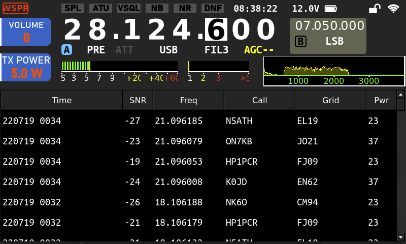

What it does
- Receives WSPR; receive only so far.
- Uploads spots to wsprnet.org when online.
- Includes userland improvements.

Installation
- Download the compressed v0.9.8 SD card image.
- Decompress it:
xz -d x6100-wspr-0.9.8.img.xz. - Write the decompressed image to the SD card. For example, if your SD card is
/dev/sdb:sudo dd if=x6100-wspr-0.9.8.img of=/dev/sdb bs=4k
Use
Boot the X6100 with that SD card in the CARD slot.
Configuration
Configuration is required for wsprnet reporting, and settings persist across reboots. Steps 1–4 can be done on another device by mounting partition 2 of the SD card.
- Copy
/root/spotter-loop.conf.templateto/root/spotter-loop.conf. - Update at least
CALLandGRIDin that file. - Copy
/etc/NetworkManager/system-connections/default.nmconnection.templateto/etc/NetworkManager/system-connections/default.nmconnection. - Set the WiFi SSID and PSK in that file.
- If you configured through the serial console, reboot.
- Once connected to WiFi, sync time with
/etc/init.d/S48sntpd startif the system clock is wrong.
The network is usually not up in time for that init script, so sntpd has to be started manually.
Root filesystem build
This takes over an hour and several dozen gigabytes of disk space.
wget https://buildroot.org/downloads/buildroot-2020.02.9.tar.gz
git clone https://github.com/sstjohn/x6100-wspr.git
tar xf buildroot-2020.02.9.tar.gz
make -C buildroot-2020.02.9 O=../br2_build BR2_EXTERNAL=../x6100-wspr/br2_external x6100-wspr_defconfig
cd br2_build
make -j$(nproc)The output is br2_build/images/rootfs.tar.